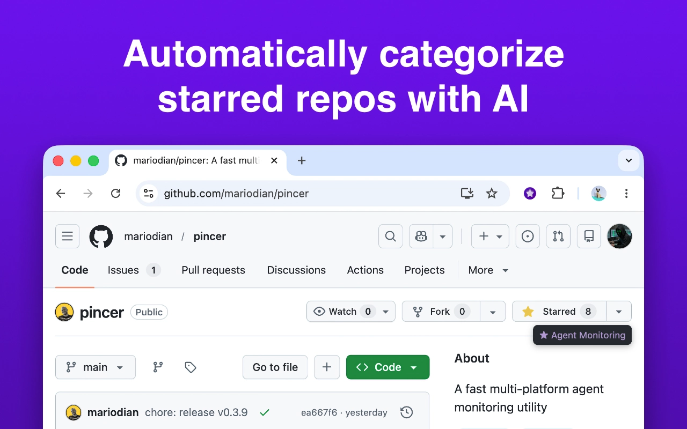

Flat lists don’t scale
GitHub’s star page is one stream: no topics, no structure. Finding “that auth library” means endless scrolling.
When you star a repo, Starshelf labels it with AI. Browse by topic instead of scrolling a flat list.
After hundreds of stars, that library from six months ago vanishes under a scroll of good intentions.
GitHub’s star page is one stream: no topics, no structure. Finding “that auth library” means endless scrolling.
Star a repo; AI puts it on a GitHub list. A label appears on the page. Search when you need the repo later.
A light extension. Your keys. Your providers. Categories that stick.
Starshelf detects the star click and categorizes the repo. No extra steps.
Classify your entire star library in one run. Progress stays in the session.
Find starred repos by name, description, or language.
Use Anthropic, OpenAI, or OpenCode with your own API key. Starshelf sells no access.
After you star, a category label appears on the page so you stay on GitHub.
Re-categorize anytime. Match emoji prefixes and list names to your style.
Install once. Add your keys. Keep starring as you always have.
Get Starshelf from the Chrome Web Store or Firefox Add-ons. Chromium browsers work too.
Open the popup. Enter a GitHub token and an API key for Anthropic, OpenAI, or OpenCode. Keys stay in local extension storage.
Star any public GitHub repo. Starshelf categorizes it, updates your lists, and shows an overlay. Batch-run older stars when you choose.
From the first star to searchable shelves.

AI categorizes starred repos automatically
Free, open source, and private by design. Install Starshelf; stop losing repos in the scroll.